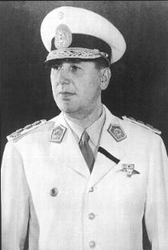

Juan Domingo Perón (1895-1974)
Militar y político argentino. Elegido presidente de la República, dominó la vida política del país desde 1944 hasta su muerte en 1974. Nació en Lobos, en 1895. Su carrera política se inicia a raíz de su participación en el golpe de Estado del 4 de junio de 1943, momento a partir del cual adopta una postura dominante en el Gobierno militar, en el que fue nombrado ministro de Guerra y de Trabajo y Previsión. Desde ese cargo promulgó leyes sociales que le permitieron acercarse a la clase obrera y controlar la poderosa Confederación Nacional del Trabajo (CNT).
En 1944 es vicepresidente de la República, y la figura política más popular de su país. Apartado del poder en 1945, y confinado en la isla Martín García, el pueblo de Buenos Aires aclama al "coronel del pueblo", y su esposa, Eva Duarte (Evita) convoca a los "descamisados", que marchan del 17 de octubre de 1945. Tras esta marcha regresó triunfalmente a su país, donde fue elegido presidente (1946-1951).
Durante su primer mandato, en el que influyó de forma relevante la labor de su esposa, especialmente en el plano social, mejoró las condiciones de vida de los obreros, promovió la industrialización del país, controló el comercio exterior y nacionalizó el ferrocarril y los medios de comunicación. El "peronismo" se ganó, sobre todo, la lealtad de la clase trabajadora.
Reelegido en 1951, elaboró un nuevo credo político, conocido con el nombre de "justicialismo", con el que pretendió superar la oposición de la clase capitalista.
En 1955 es derrocado por el golpe de Estado dirigido por el general Aramburu y el almirante Rojas, y se ve obligado a huir del país. Se exilió en Paraguay, Venezuela, República Dominicana y, finalmente, en España, donde se estableció. Desde Madrid continuó siendo el jefe del movimiento justicialista, que trabajó incesantemente por devolver al general a su cargo de presidente.
Tras diecisiete años de ausencia regresa a su país en 1972, retorno que comenzó a preparar su tercera esposa, María Estela Martínez de Perón, en 1965.
El 24 de septiembre de 1973 es elegido, de nuevo, presidente de la nación por mayoría popular.
Gobernó junto con su nueva esposa, vicepresidenta del país, hasta el 29 de junio de 1974, fecha en que le cedió los poderes presidenciales. Dos días más tarde, fallecía en Buenos Aires, y su sucesora se mantendría en el poder hasta el nuevo golpe militar de marzo de 1976.